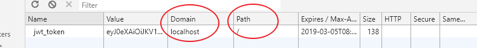

之前对于跨域相关的知识一致都很零碎，正好现在的代码中用到了跨域相关的，现在来对这些知识做一个汇总整理，方便自己查看，说不定也可能对你有所帮助。
本篇主要内容如下：
相信很多人在 web 入门时，都被跨域问题折磨的死去活来。要想完全掌握跨域就得知道为什么会有跨域这个问题出现。
简单来说跨域问题是因为浏览器的同源策略导致的。那浏览器为什么要有同源策略呢？
当然是为了安全。没有同源策略限制的浏览器环境是非常危险的（即使有了同源策略也不是百分百安全），有兴趣的可以去了解了解CSRF和XSS攻击。
所谓的“同源”指的是“三个相同”：
如果非同源页面有以下限制：
但是这里有个例外，所有带“src”属性的标签都可以跨域加载资源，不受同源策略的限制，这样你应该可以想到一个比较古老的跨域解决方案（JSONP）,同时这个特性也会被用作 CSRF 攻击。
在前端开发中经常会遇到跨域的问题，比如前后端分离中前后端部署在不同的端口上，或者在前端页面中需要向另外一个服务请求数据，这些都会被跨域所阻挡。
目前主要有以下几种办法解决跨域问题：
这个太暴力，也太不安全了，不用考虑。
前面说过了浏览器对于带 src 属性的标签都可以跨域的。因此 jsonp 的实现流失利用了这个特性，在页面中动态插入一个<script>标签,然后他的 src 属性就是接口调用地址，这样就能访问过去了，然后再讲返回内容特殊处理成立即执行的函数，这样就看起像进行了一次跨域请求。之所以不推荐这种方式，主要有以下两个原因：
这种方法只需要后台做处理便能实现跨域，前面说的 http 跨域请求是能够发出去的，只是不能接收，那我们只要在响应头Access-Control-Allow-Headers中加入允许请求的地址即可，以,分隔，同时*代表所有地址都允许。比如：
Access-Control-Allow-Headers:http://localhost:8081,http://localhost:8082本方法是较为常用的一中跨域办法,只需简单修改服务端代码即可。
这也是非常常用的一种跨域方法。跨域限制只是浏览器限制，服务端并没有这个概念，因此我们在前端还是请求同域地址，然后在服务端做一个代理，将请求转发到真正的 ip 和端口上。通常使用 nginx 实现端口转发，比如下面一段 nginx 配置：
server {
# /test1/abc 转发到 http://a.com:8011/abc
location /test1/ {
proxy_pass http://a.com:8011/;
}
# /test2/abc 转发到 http://b.com:8011/main/abc
location /test2/ {
proxy_pass http://b.com:8011/main/;
}
# /test3/abc 转发到 http://c.com:8011/test3/abc
location /test3/ {
proxy_pass http://c.com:8081;
}
} cookie 的同源策略是通过

Domain和path两个部分来共同确认一个 cookie 在哪些页面上可用。
Domain确定这个 cookie 所属的域名，不能带端口或协议。因此 cookie 便可在不同端口/不同协议下共享,只要域名相同。有一个例外是父子域名间也能共享 cookie，只需将 Domain 设置为.父域名。
path就简单多了，通过 Domain 确定哪些域名可以共享 cookie，然后在通过path来确定 cookie 在哪些路径下可用。使用/表示所有路径都可共享。
具体如下：
example,path : /a可获取 cookie:http://example:8081/a,https://example:8081/aexample,path : /可获取 cookie:http://example:8081/a,https://example:8081/a , http://example:12/abcd.example,path : /a可获取 cookie:http://example:8081/a , https://localhost:8081/a , http://test.example:889/a注意:在跨域请求中，即时目标地址有 cookie 且发起请求的页面也能读取到该 cookie，浏览器也不会将 cookie 自动设置到该跨域请求中。比如在http://localhost:8082/a页面中请求http://localhost:8081/abc,这两个地址下拥有共享cookie，http请求也不会携带cookie。
本篇原创发布于：FleyX 的个人博客